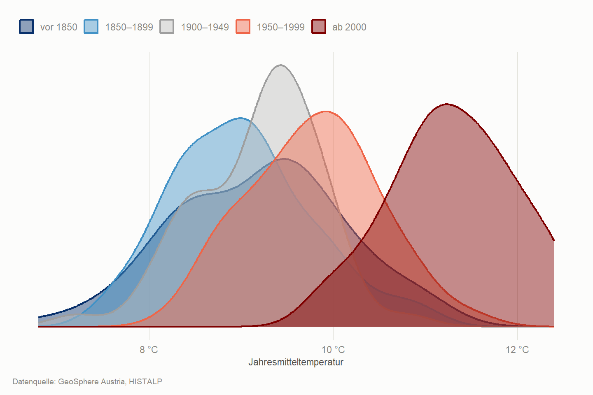

Die Station Wien-Hohe Warte misst seit dem 18. Jahrhundert. Das ist ungewöhnlich — die meisten Klimagrafiken beginnen 1850 oder später, weil vorher schlicht niemand gemessen hat. Die Daten stammen aus HISTALP, einer homogenisierten Sammlung von Messreihen für den Alpenraum, die GeoSphere Austria über eine offene Schnittstelle bereitstellt.
Code
referenz <-c(1961, 1990) # WMO-Standardperioderoh <-histalp_holen(HISTALP_STATIONEN$station_id, c("T01", "R01"))klima <- roh |>rename_with(tolower) |>mutate(jahr =as.integer(substr(as.character(time), 1, 4)),station_id =as.integer(station)) |># Rohspalte entfernen, sonst kollidiert sie beim Join mit dem Klarnamenselect(-station) |>left_join(HISTALP_STATIONEN, by ="station_id") |>select(jahr, station, hoehe, temperatur = t01, niederschlag = r01) |>filter(!is.na(jahr)) |>group_by(station) |>mutate(basis =mean(temperatur[between(jahr, referenz[1], referenz[2])],na.rm =TRUE),abweichung = temperatur - basis) |>ungroup()wien <- klima |>filter(station =="Wien-Hohe Warte", !is.na(temperatur))
Zweieinhalb Jahrhunderte in Farbe
Ein Streifen pro Jahr, eingefärbt nach der Abweichung vom langjährigen Mittel. Keine Achsen, keine Zahlen — die Form hat Ed Hawkins bekannt gemacht, weil sie ohne jede Erklärung funktioniert.
Der naheliegende Einwand: Wien ist gewachsen, Beton speichert Wärme, die Messstation steht heute in einer anderen Umgebung als vor 200 Jahren. Das ist ein echter Effekt und heißt städtische Wärmeinsel.
Deshalb lohnt der Blick auf sechs Stationen gleichzeitig — darunter der Sonnblick auf 3.105 Metern, mitten im Gletschergebiet, weit weg von jeder Siedlung.
Figure 2: Sechs Stationen von 209 bis 3.105 Metern, nach Seehöhe sortiert.
Der Sonnblick zeigt dasselbe Muster wie Wien. Die Erwärmung ist also kein Großstadteffekt.
Was früher ein Rekord war
Statt der Zeitreihe die Verteilung: Wie häufig war welche Jahrestemperatur in welcher Epoche? Die Kurven verschieben sich so weit nach rechts, dass sie sich kaum noch überlappen.
Code
epochen <- wien |>mutate(epoche =case_when( jahr <1850~"vor 1850", jahr <1900~"1850–1899", jahr <1950~"1900–1949", jahr <2000~"1950–1999",TRUE~"ab 2000") |>factor(levels =c("vor 1850", "1850–1899", "1900–1949","1950–1999", "ab 2000")))ggplot(epochen, aes(temperatur, fill = epoche, color = epoche)) +geom_density(alpha =0.45, linewidth =1) +scale_fill_manual(values =c("#08306b", "#4292c6", "#bdbdbd","#ef6548", "#7f0000"), name =NULL) +scale_color_manual(values =c("#08306b", "#4292c6", "#9e9e9e","#ef6548", "#7f0000"), name =NULL) +scale_x_continuous(labels = \(x) paste0(x, " °C")) +labs(x ="Jahresmitteltemperatur", y =NULL, caption = QUELLE_GEO) +theme_at() +theme(axis.text.y =element_blank(),panel.grid.major.y =element_blank())

Figure 3: Verteilung der Jahresmitteltemperatur in Wien, nach Epochen.
Code
schnitt_heute <-mean(epochen$temperatur[epochen$jahr >=2000], na.rm =TRUE)frueher <- epochen |>filter(jahr <1900)tibble(`Schnitt ab 2000`=round(schnitt_heute, 2),`Jahre vor 1900`=nrow(frueher),`davon wärmer als heute üblich`=sum(frueher$temperatur > schnitt_heute, na.rm =TRUE)) |> knitr::kable()
Schnitt ab 2000
Jahre vor 1900
davon wärmer als heute üblich
11.29
125
0
Die Temperatur steigt. Der Regen nicht.
Eine Gegenüberstellung, die man selten sieht — und die wichtig ist, weil „mehr Extremwetter” oft pauschal behauptet wird. In der Jahresniederschlagssumme zeigt sich kein klarer Trend. Das heißt nicht, dass sich nichts ändert; es heißt, dass sich diese bestimmte Kennzahl nicht verändert hat.